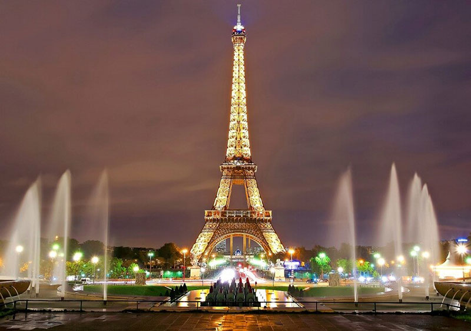

Париж – столица искусства, моды и романтики
Париж – один из самых знаменитых городов в мире, один из самых уникальных и, безусловно, один из самых прекрасных городов на всей планете. К тому же Париж – это весьма многоликий город, и зачастую разные люди, побывавшие в этом городе, представляют себе Париж совершено по разному. И поэтому у этого города так много совершенно непохожих друг на друга эпитетов.
Так, например, часто Париж называют «городом огней», ведь освещение города ночью – это потрясающее и необычайное зрелище, которым, кстати, можно любоваться совершенно бесплатно. Также Париж называют и «городом праздника», и действительно в этом городе за год успевает случиться не менее шести тысяч различных культурных событий, праздников и фестивалей.
 Эйфелева башня. Город ПарижСовсем не зря Париж называют и «городом искусства и творчества», и город может представить
своим гостям свыше ста пятидесяти музеев и картинных галерей, множество архитектурных памятников,
а также театры, музыкальные и джазовые клубы, концертные залы, театры, кинотеатры и многое другое для
культурного отдыха, просвещения и творческой реализации. Совсем не случайно Париж является новатором в
сфере дизайна, рекламы и фотоискусства.
Конечно, Париж известен всему миру и как «столица мировой моды». Одежда, косметика, аксессуары, драгоценные
украшения зачастую начинают свою жизнь именно с Парижа. Причем, в Париже располагаются как самые дорогие бутики
в мире, так и здесь же существует необычайный блошиный рынок, на котором можно приобрести достаточно эксклюзивные вещи за гроши.
Также Париж называют и «городом гурманов». Конечно же, парижская кухня известна во всем мире, а искусство французских кулинаров даже не требует
дополнительного представления. И опять же в Париже множество эксклюзивных ресторанов с изысканным меню и дорогостоящими винами,
но есть и немало недорогих закусочных, кафе и бистро, где можно недорого, но очень вкусно поесть. К тому же более нигде в мире
вам не предложат в меню блюдо из лягушачьих лапок и вкусные жареные каштаны, которыми так любят лакомиться парижане.
Ну и, конечно же, Париж является «городом любви и романтики». Видимо, в этом городе какая-то особенная
атмосфера и для любви Париж – самый лучший город на свете
Из достопримечательностей Парижа обязательно стоит полюбоваться Эйфелевой башней – символом столицы и всей Франции. Эйфелева башня необычайна
и прекрасна и в свете дня и в свете ночных огней. Стоит побывать и в Лувре, который располагается в бывшей резиденции французских королей и где
собрано самая богатая в мире коллекция живописи и скульптуры. Стоит посмотреть и великолепный и знаменитый Собор Парижской богоматери и
Святую Капеллу. Также одной из известных достопримечательностей Парижа является и великолепное кладбище Перлашез,
где похоронено множество известнейших личностей. Нужно побывать в Версале, где находятся красивые дворцы
(в частности Большой Трианон и малый Трианон) и парки. Также следует пройтись по Елисейским полям, где расположены
офисы парфюмерных компаний, французские рестораны, знаменитые бутики и побывать в саде Тюильри, где издавна устраивала
пешие прогулки французская знать и где по сей день любят гулять парижане.
Музеи Парижа весьма интересны и уникальны. Помимо знаменитого Лувра, стоит побывать в Музее авиационной и космической промышленности и
посмотреть два находящихся в музее настоящих «конкорда», в Музее Севре можно полюбоваться интереснейшей коллекцией фарфора,
в Музее Дорсэ представлены работы художников – импрессионистов, а в уникальном Музей парфюмерии Фрагонар можно будет
узнать многое об истории развития парфюмерии.
К сожалению, в этом кратком обзоре нельзя рассказать обо всем, чем славится знаменитый город Париж, но то, что этот город никого не
оставил равнодушным – не подлежит сомнению. Многие, кто побывал в Париже, полюбили этот город навсегда, другие же, как
впечатлительные японцы, нередко после посещения знаменитого города страдают «парижским синдромом» (особая разновидность болезни,
вызванная разочарованием от посещения города Парижа). Париж, столица искусства, моды и романтики, многолик и разнообразен и не
похож ни на один другой город в мире.
Другие из 100 городов, которые надо посетить:
67 - Одесса – жемчужина у моря
68 - Одесса – жемчужина у моря
69 - Одесса – жемчужина у моря
70 - Одесса – жемчужина у моря

Reklama
Понравилась информация? Поделитесь с друзьями и знакомыми:
Лучший город:
Лучший город:
Реклама: